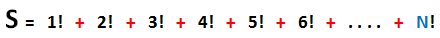
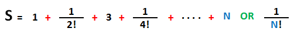
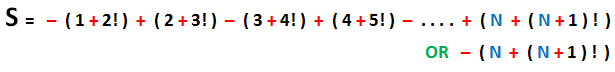

Algorithmsحساب قيمة الـ Factorial للعدد في الخوارزميات
مفهوم الـ Factorial
في مادة الرياضيات عندما نضع علامة تعجب بعد الرقم فهذا يعني أننا نقصد الـ Factorial لهذا الرقم.
مثال: 5! =======> هنا نقصد الـ Factorial للعدد 5 , و هو يساوي 120.
طريقة حساب قيمة الـ Factorial للعدد
الـ Factorial للعدد هو بكل بساطة ضرب جميع الأرقام من 1 إلى هذا العدد. أمثلة:
طريقة حساب قيمة الـ Factorial للعدد في أي لغة برمجة
بكل بساطة نستخدم الحلقات لنحصل على الـ Factorial. لاحظ الجدول التالي.
تمارين شاملة حول الـ Factorial
تذكر
النوع int لا يقبل تخزين أرقام بعد الفاصلة. لذلك لا تستخدم متغير نوعه int لتخزين ناتج عملية قسمة حتى لا تخسر الأرقام الموجودة بعد الفاصلة.
إذاً, إستخدم متغير نوعه double عند تخزين ناتج أي عملية قسمة لضمان عدم خسارة الأرقام بعد الفاصلة.
معلومة تقنية
إذا قسمت العدد 1 على أي عدد صحيح ( أي نوعه int ) فإن الجواب سيكون 0 فقط, أي لن يظهر أي رقم بعد الفاصلة لأن الكمبيوتر سيجد أنك تتعامل مع أنواع لا تقبل الفاصلة (int على int).
لذلك, إذا أردت أن تقسم أي عدد على أي عدد و ترى جميع الأرقام الموجودة بعد الفاصلة, عليك على الأقل أن تضع نوع إحدى العددين ( المقسوم أو المقسوم عليه ) يقبل الأرقام الموجودة بعد الفاصلة ( أي double ).
التمرين الأول
أكتب برنامج يطلب من المستخدم إدخال عدد واحد, ثم يعرض له الـ Factorial لهذا العدد.
الحل و التفسير »
التمرين الثاني
أكتب برنامج يطلب من المستخدم إعطائه عدد صحيح و يخزنه في المتغير N.
ثم يقوم بحساب ناتج جمع جميع الأرقام من 1 إلى N كما في الصورة التالية.

الحل و التفسير »
التمرين الثالث
أكتب نفس البرنامج السابق بطريقة أخرى, أي أكتب برنامج يطلب من المستخدم إعطائه عدد صحيح و يخزنه في المتغير N.
ثم يقوم بحساب ناتج جمع جميع الأرقام من 1 إلى N كما في الصورة التالية.
الحل و التفسير »
التمرين الرابع
أكتب برنامج يطلب من المستخدم إعطائه عدد صحيح و يخزنه في المتغير N.
ثم يقوم بحساب ناتج جمع و طرح الأرقام من 1 إلى N كما في الصورة التالية.
الحل و التفسير »
التمرين الخامس
أكتب برنامج يطلب من المستخدم إعطائه عدد صحيح و يخزنه في المتغير N.
ثم يقوم بحساب ناتج جمع القيم المفردة و القيم المزدوجة من 1 إلى N كما في الصورة التالية.
الحل و التفسير »
التمرين السادس
أكتب برنامج يطلب من المستخدم إعطائه عدد صحيح و يخزنه في المتغير N.
ثم يقوم بحساب ناتج جمع جميع الأرقام من 1 إلى N كما في الصورة التالية.

الحل و التفسير »
التمرين السابع
أكتب برنامج يطلب من المستخدم إعطائه عدد صحيح و يخزنه في المتغير N.
ثم يقوم بحساب ناتج جمع جميع الأرقام من 1 إلى N كما في الصورة التالية.

الحل و التفسير »
التمرين الثامن
أكتب برنامج يطلب من المستخدم إعطائه عدد صحيح و يخزنه في المتغير N.
ثم يقوم بحساب ناتج جمع جميع الأرقام من 1 إلى N كما في الصورة التالية.
الحل و التفسير »
التمرين التاسع
أكتب برنامج يطلب من المستخدم إعطائه عدد صحيح و يخزنه في المتغير N.
ثم يقوم بحساب ناتج جمع جميع الأرقام من 1 إلى N كما في الصورة التالية.

الحل و التفسير »

 محرر الويب
محرر الويب نظام الألوان
نظام الألوان محول الوحدات
محول الوحدات محلل عناوين الشبكات
محلل عناوين الشبكات